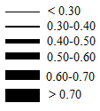
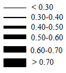

Science Apps
AIP users will be able to access their favorite Arabidopsis data as well as many new kinds of information via "science apps" developed and published to AIP via the Arabidopsis community and the AIP team. A more fully fleshed-out preview of this functionality is expected by the time of the 2014 International Conference on Arabidopsis Research.
Here is an example of how this interface may look:

Enter a gene name to see its protein-protein interactions
Query (Any gene name or AGI ID, e.g. ASK1, AT1G10940, AT3G62980):
Information about this edge
Mouse over an edge on the above diagram to get information about the interaction it represents.
Mouse over an edge on the above diagram to get information about the interaction it represents.
Line thickness by EBI's mi-score confidence value (more information here):


Data & web services provided by The Bio-Analytic Resource for Plant Biology (BAR): http://bar.utoronto.ca/webservices/
Service Notices
| [Service Disruption] ThaleMine update in progress | 2014-05-29 10:00 to 13:00 | The current instance of ThaleMine has been shutdown to facilitate an update to the data and software. We are sorry for the inconvenience caused. Please check back soon for the new and improved release. Thank you! |
| ThaleMine and genome browsers are now publicly available | 2014-04-02 (All day) | Araport PR2 went live this morning before password protection was turned off on the ThaleMine and the genome browser services. This has been resolved and these now are available for public use. Please note that the main Araport site and ThaleMine use separate user accounts for login. This will be resolved in a future release of the portal. |
| Araport Preview 2 released today | 2014-04-01 (All day) | We are pleased to announce public availability of Arabidopsis Information Portal Preview Release 2. Release notes can be found under the About menu. |